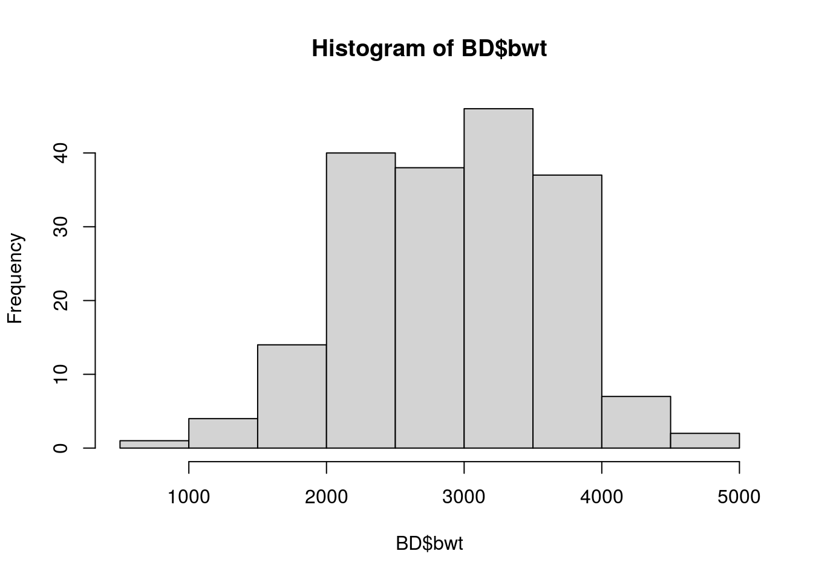
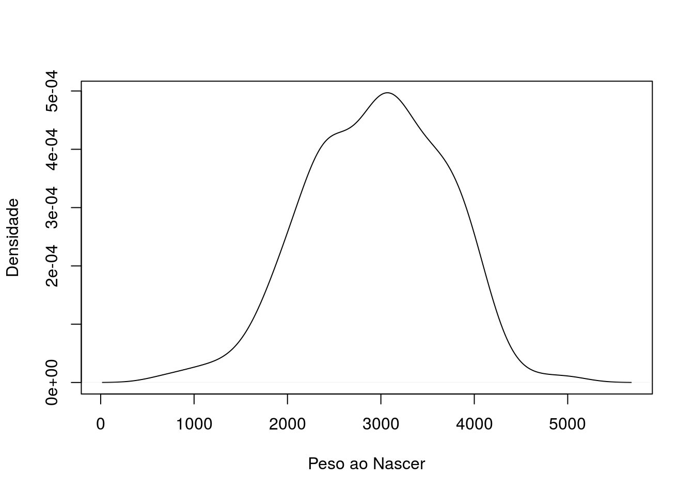
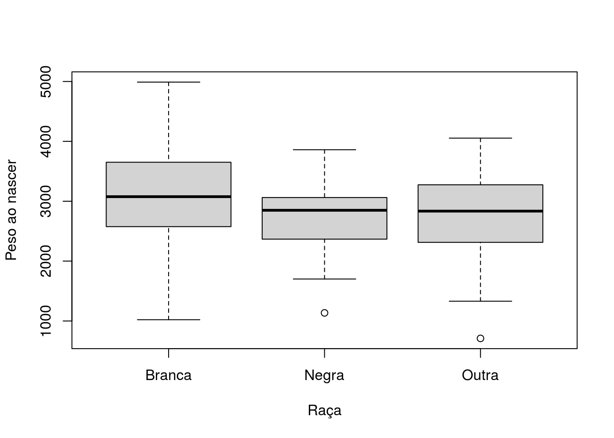
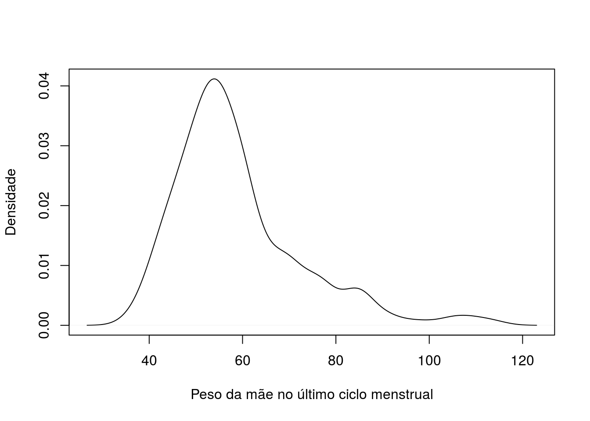
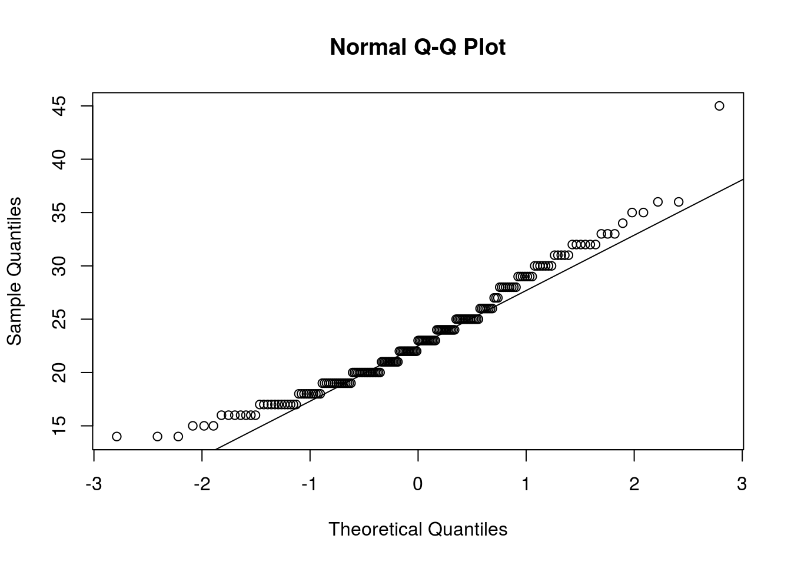
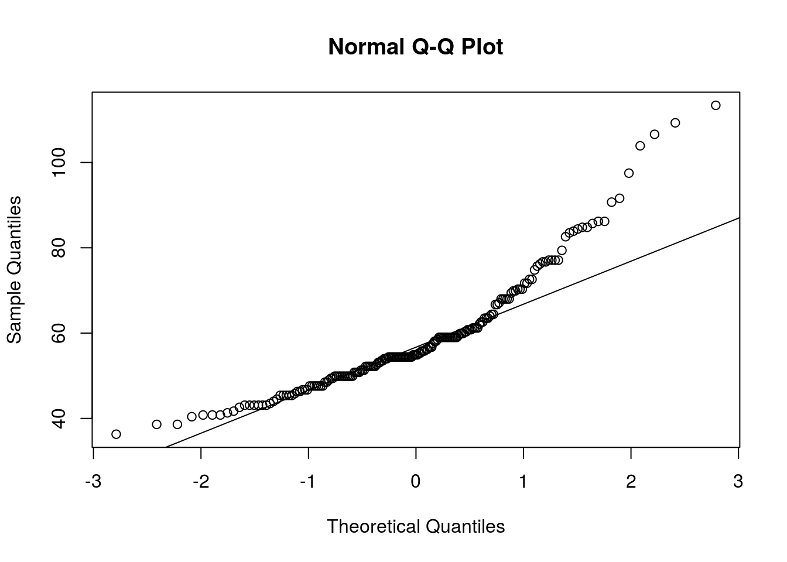
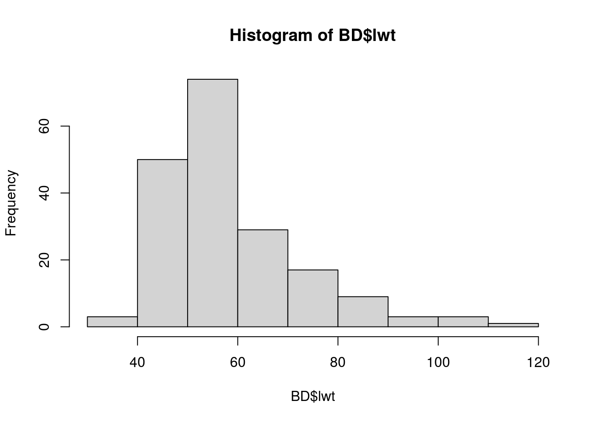
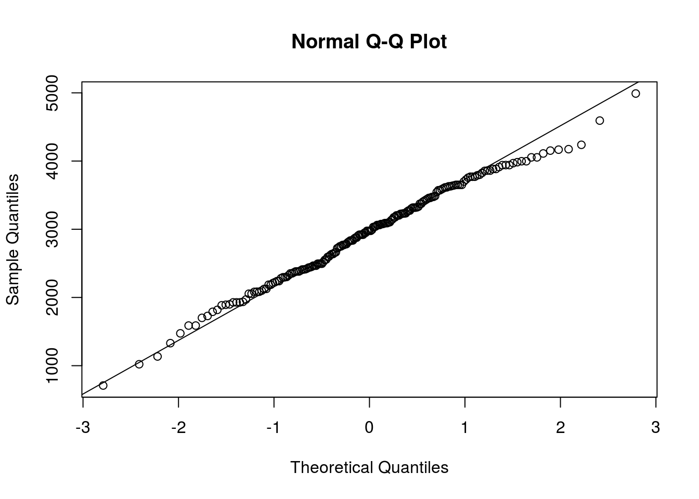
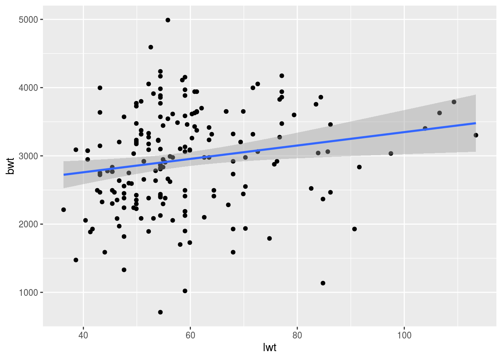

Chapter 2 Teste de Hipóteses
2.0.1 2.1.1.Baixar e Instalar Bibliotecas
Para esta aula utilizaremos apenas* funções nativas do R, sem necessidade de instalar ou carregar bibliotecas adicionais.
2.0.2 2.1.2.Banco de dados e variaveis
2.0.2.3 2.1.2.3.Ajustar o BD para as classes das variáveis
BD[,c("low","race","smoke","ptl","ht","ui","ftv")] <- lapply(BD[,c("low","race","smoke","ptl","ht","ui","ftv")], as.factor)
BD$low <- factor(BD$low, levels = c(0,1), labels = c("Não", "Sim"))
BD <- transform(BD, lwt=round(lwt*0.453592,1))
BD$race <- factor(BD$race, levels = c(1,2,3), labels = c("Branca", "Negra","Outra"))
BD$smoke <- factor(BD$smoke, levels = c(0,1), labels = c("Não", "Sim"))
BD$ht <- factor(BD$ht, levels = c(0,1), labels = c("Não", "Sim"))
BD$ui <- factor(BD$ui, levels = c(0,1), labels = c("Não", "Sim"))2.0.2.4 2.1.2.4.Verificar as propriedades das variáveis
(verifica dados como ocorrência, quartis, média, mediana, limites etc):
## id low age lwt race smoke
## Min. : 4.0 Não:130 Min. :14.00 Min. : 36.30 Branca:96 Não:115
## 1st Qu.: 68.0 Sim: 59 1st Qu.:19.00 1st Qu.: 49.90 Negra :26 Sim: 74
## Median :123.0 Median :23.00 Median : 54.90 Outra :67
## Mean :121.1 Mean :23.24 Mean : 58.88
## 3rd Qu.:176.0 3rd Qu.:26.00 3rd Qu.: 63.50
## Max. :226.0 Max. :45.00 Max. :113.40
## ptl ht ui ftv bwt
## 0:159 Não:177 Não:161 0:100 Min. : 709
## 1: 24 Sim: 12 Sim: 28 1: 47 1st Qu.:2414
## 2: 5 2: 30 Median :2977
## 3: 1 3: 7 Mean :2945
## 4: 4 3rd Qu.:3475
## 6: 1 Max. :4990(verificar existência de dados faltantes (NA) no banco de dados):
## integer(0)2.0.3 2.1.3. Hipótese I
Para o primeiro exemplo, vamos supor que estamos tentando investigar a relação do tabagismo na gravidez com o peso do bebê ao nascer. Hipótese nula: Não há diferença no peso ao nascer de bebês de mães fumantes em em comparação com o peso ao nascer de bebês de mães não fumantes. Hipótese alternativa: Há diferença no peso ao nascer de bebês de mães fumantes em em comparação com o peso ao nascer de bebês de mães não fumantes. Nesse caso, temos uma variável categórica dicotômica como independente e uma variável contínua como dependente. Qual seria a opção de teste paramétrico? E de teste não-paramétrico?
2.0.3.1 2.1.3.1. Pressupostos (Teste T)
A utilização do Teste T depende de algumas condições. ##### Homocedasticidade A cada nível das variáveis previsoras, a variância do termo residual deve ser constante. Isso significa que os resíduos a cada nível dos previsores devem ter a mesma variância (homocedasticidade): quando as variâncias são desiguais diz-se que existe heterocedasticidade. ###### Teste de Levene Função: LeveneTest(dados\(vardependente~dados\)varindependente) Df: Degrees of Freedom F value: Quanto mais distante de 1, maior é a diferença detectada entre as variâncias. O valor de p informa quando essa diferença é significativa ou não. Pr(>F): Valor de p para o teste de Levene em que a Ho é que as variâncias são iguais.
## Levene's Test for Homogeneity of Variance (center = median)
## Df F value Pr(>F)
## group 1 1.371 0.2431
## 1872.0.3.1.1 2.1.3.2. Normalidade
2.0.3.1.1.1 Aspecto visual

 ###### Shapiro-wilk
Função: Shapiro.test(dados$vardependente)
W: Quanto mais próximo de 1, maior é a semelhança da curva estudada com a distribuição normal. O valor de p informa quando essa semelhança é significativa ou não.
P-value: Valor de p para o teste SW em que a Ho é que não há diferença entre a distribuição estudada e uma distribuição normal.
###### Shapiro-wilk
Função: Shapiro.test(dados$vardependente)
W: Quanto mais próximo de 1, maior é a semelhança da curva estudada com a distribuição normal. O valor de p informa quando essa semelhança é significativa ou não.
P-value: Valor de p para o teste SW em que a Ho é que não há diferença entre a distribuição estudada e uma distribuição normal.
##
## Shapiro-Wilk normality test
##
## data: BD$bwt
## W = 0.99244, p-value = 0.43462.0.3.1.1.2 Kolmogorov-Smirnov
Função: Ks.test(dados\(vardependente,"pnorm", mean(dados\)vardependente), sd(dados$vardependente)) pnorm identifica que o KS vai comparar a distribuição da variável dependente com a normal D: Representa a distância vertical máxima entre a curva estudada e a curva de referência. Quando mais próximo de zero, maior a semelhança entre as duas distribuições. P-value: Valor de p para o teste KS em que a Ho é que não há diferença entre a distribuição estudada e uma distribuição normal.
## Warning in ks.test(BD$bwt, "pnorm", mean(BD$bwt), sd(BD$bwt)): default ks.test() cannot compute correct p-values with ties;
## see help page for one-sample Kolmogorov test for discrete distributions.##
## One-sample Kolmogorov-Smirnov test
##
## data: BD$bwt
## D = 0.043521, p-value = 0.8665
## alternative hypothesis: two-sided2.0.3.1.2 2.1.3.3. Teste de hipótese - T não pareado
Função: t.test(dados\(varindependente~BD\)vardependente) t: A diferença calculada entre as médias em unidades de desvio padrão; Df: Degrees of freedom; P-value: Valor de p para o teste KS em que a Ho é que não há diferença entre as médias dos dois grupos.
##
## Welch Two Sample t-test
##
## data: BD$bwt by BD$smoke
## t = 2.7065, df = 169.97, p-value = 0.007494
## alternative hypothesis: true difference in means is not equal to 0
## 95 percent confidence interval:
## 76.16628 486.71973
## sample estimates:
## mean in group Não mean in group Sim
## 3054.957 2773.5142.0.4 2.1.4. Hipótese II
Para o segundo exemplo, vamos supor que estamos tentando investigar a relação da raça da mãe com o peso ao nascer. Hipótese nula: Não há diferença no peso ao nascer de bebês de segundo a raça de suas mães. Hipótese alternativa: Há diferença no peso ao nascer de bebês de segundo a raça de suas mães. Nesse caso, temos uma variável categórica policotômica como independente e uma variável contínua como dependente. Quais seriam as opções para testes paramétricos e não-paramétricos?
2.0.4.1 2.1.4.1 Pressupostos (One-way ANOVA)
2.0.4.1.1 Homocedasticidade
## Levene's Test for Homogeneity of Variance (center = median)
## Df F value Pr(>F)
## group 2 0.4588 0.6327
## 1862.0.4.1.2 2.1.4.2. Normalidade
2.0.4.1.2.1 Aspecto visual
Distribuição da variável independente

 Variável independente x variável dependente
 ###### Shapiro-wilk
##
## Shapiro-Wilk normality test
##
## data: BD$bwt
## W = 0.99244, p-value = 0.4346## Warning in ks.test(BD$bwt, "pnorm", mean(BD$bwt), sd(BD$bwt)): default ks.test() cannot compute correct p-values with ties;
## see help page for one-sample Kolmogorov test for discrete distributions.##
## One-sample Kolmogorov-Smirnov test
##
## data: BD$bwt
## D = 0.043521, p-value = 0.8665
## alternative hypothesis: two-sided2.0.4.1.3 2.1.4.3. Teste de hipótese - One-way ANOVA
2.0.4.1.3.1 Opção I - Função lm()
Função:
##
## Call:
## lm(formula = BD$bwt ~ BD$race)
##
## Residuals:
## Min 1Q Median 3Q Max
## -2095.01 -503.01 -13.95 526.99 1886.05
##
## Coefficients:
## Estimate Std. Error t value Pr(>|t|)
## (Intercept) 3103.95 72.88 42.588 < 2e-16 ***
## BD$raceNegra -384.26 157.88 -2.434 0.01588 *
## BD$raceOutra -299.93 113.68 -2.638 0.00904 **
## ---
## Signif. codes: 0 '***' 0.001 '**' 0.01 '*' 0.05 '.' 0.1 ' ' 1
##
## Residual standard error: 714.1 on 186 degrees of freedom
## Multiple R-squared: 0.05081, Adjusted R-squared: 0.0406
## F-statistic: 4.978 on 2 and 186 DF, p-value: 0.007834A função lm() é utilizada para construir modelos lineares de regressão. Sintaxe: lm(formula, data, weights, subset, na.action) A função summary() fornece os principais parâmetros do objeto. Retorno: Em termos de ANOVA, a parte de interesse do retorno é o F-statistic, que dá informação do F-value, dos DFs e p-value para a Ho de que todos os grupos têm médias iguais entre si.
2.0.4.1.3.2 Opção II - Função anova()
Função:
## Analysis of Variance Table
##
## Response: BD$bwt
## Df Sum Sq Mean Sq F value Pr(>F)
## BD$race 2 5076973 2538487 4.9779 0.007834 **
## Residuals 186 94850291 509948
## ---
## Signif. codes: 0 '***' 0.001 '**' 0.01 '*' 0.05 '.' 0.1 ' ' 1A função anova() é utilizada para construir uma tabela ANOVA do objeto fornaecido. Sintaxe: Anova(mod, …) em que mod pode ser lm para a “linear model”, aov para “análise de variância” e outras funções. Retorno: Informa Df, Sum sq, Mean Sq, F-value e p-value para a Ho de que todos os grupos têm médias iguais entre si.
2.0.4.1.4 Teste post-hoc (teste de Tuckey)
Função:
## Tukey multiple comparisons of means
## 95% family-wise confidence level
##
## Fit: aov(formula = BD$bwt ~ BD$race)
##
## $`BD$race`
## diff lwr upr p adj
## Negra-Branca -384.25561 -757.2617 -11.24948 0.0418269
## Outra-Branca -299.93299 -568.5164 -31.34961 0.0244102
## Outra-Negra 84.32262 -305.5078 474.15306 0.8660602A função TukeyHSD() realiza o teste de Tukey no mod especificado (no caso, aov). Sintaxe: TukeyHSD(x, which, ordered = FALSE, conf.level = 0.95, …) Retorno: O elemento de maior interesse vai ser o p-value para identificar os grupos nos quais as diferenças são analisadas.
2.0.5 2.1.5. Hipótese III
Para o último exemplo, vamos supor que estamos tentando investigar a relação do peso da mãe no último ciclo menstrual com o hábito de fumar. Hipótese nula: Não há diferença significativa no peso da mãe no último ciclo menstrual entre entre os grupos de mães fumantes e não fumantes. Hipótese alternativa: Há diferença significativa no peso da mãe no último ciclo menstrual entre entre os grupos de mães fumantes e não fumantes. Nesse caso, temos uma variável categórica dicotômica como independente e uma variável contínua como dependente. Quais são algumas das opções teste de hipótese que podemos usar?
2.0.5.1 2.1.5.1 Pressupostos (One-way ANOVA)
2.0.5.1.1 Homocedasticidade
## Levene's Test for Homogeneity of Variance (center = median)
## Df F value Pr(>F)
## group 1 0.5549 0.4572
## 1872.0.5.1.2 2.1.5.2. Normalidade
2.0.5.1.2.1 Aspecto visual
Distribuição da variável independente

 ###### Shapiro-wilk
##
## Shapiro-Wilk normality test
##
## data: BD$lwt
## W = 0.89324, p-value = 2.219e-10## Warning in ks.test(BD$lwt, "pnorm", mean(BD$lwt), sd(BD$lwt)): default ks.test() cannot compute correct p-values with ties;
## see help page for one-sample Kolmogorov test for discrete distributions.##
## One-sample Kolmogorov-Smirnov test
##
## data: BD$lwt
## D = 0.15327, p-value = 0.0002782
## alternative hypothesis: two-sidedAqui temos que o pressuposto da normalidade não é atendido. Precisamos recorrer a um teste não paramétrico. O teste de Teste de Wilcoxon-Mann-Whitney é uma opção quando o pressuposto da normalidade não é atendido.
2.0.5.1.3 2.1.5.3. Teste de hipótese - Wilcoxon-Mann-Whitney
##
## Wilcoxon rank sum test with continuity correction
##
## data: BD$lwt by BD$smoke
## W = 4684, p-value = 0.2427
## alternative hypothesis: true location shift is not equal to 0Valor de p para o teste WMW em que a Ho é que não há diferença entre as médias dos dois grupos.
2.1 Associações
2.1.1 Correlações Lineares
2.1.1.1 O que são:
Verificação de relação entre duas variáveis (se alterações em uma variável gera alterção em outra) OBS: um ponto é formado por duas coordenadas (X, Y) A correlação pode ser positiva ou negativa -> se +, quando x aumenta, y aumenta Erros aleatórios existem porque NÃO conhecemos todas as variáveis
2.1.1.2 Quando são utilizadas:
Quando objetiva-se correlacionar duas variáveis contínuas
2.1.1.3 3.1.3.3.Tipos:
2.1.1.3.1 PEARSON
a - versão paramétrica (baseado nos desvios em relação à média)
b - variáveis preditora deve ser contínua normal
c - variável desfecho deve ser contínua normal2.1.1.3.2 SPEARMAN
a - versão não-paramétrica (Pearson aplicado aos ranks)
b - variável preditora deve ser contínua
c - variável desfecho deve ser contínua2.1.1.4 3.1.3.4.Correlação de Pearson no R:
2.1.1.4.2 Inputs
# x -> variável preditora
# y -> desfecho2.1.1.4.3 Otputs
#cor -> índice de correlação -> pode ir de -1 a + 1
#intervalo de confiança
#p-value2.1.1.4.4 Exemplo prático
Teste de normalidade
##
## Shapiro-Wilk normality test
##
## data: BD$age
## W = 0.95977, p-value = 3.189e-05

##
## Shapiro-Wilk normality test
##
## data: BD$lwt
## W = 0.89324, p-value = 2.219e-10

##
## Shapiro-Wilk normality test
##
## data: BD$bwt
## W = 0.99244, p-value = 0.4346
 Aplicando
Aplicando
##
## Pearson's product-moment correlation
##
## data: BD$age and BD$bwt
## t = 1.2377, df = 187, p-value = 0.2174
## alternative hypothesis: true correlation is not equal to 0
## 95 percent confidence interval:
## -0.05327129 0.22991649
## sample estimates:
## cor
## 0.0901444*Uso de BD$age apenas como exemplo, visto que esta variável não possui distribuição normal.
2.1.1.5 3.1.3.5.Correlação de Spearman no R:
2.1.1.5.2 Inputs
# x -> variável preditora
# y -> desfecho
2.1.1.5.3 Otputs
#cor
#intervalo de confiança
#p-value
2.1.1.5.4 Aplicando
## Warning in cor.test.default(BD$lwt, BD$bwt, method = "spearman"): Cannot compute
## exact p-value with ties##
## Spearman's rank correlation rho
##
## data: BD$lwt and BD$bwt
## S = 845420, p-value = 0.0005609
## alternative hypothesis: true rho is not equal to 0
## sample estimates:
## rho
## 0.2486359Como tem empates, usar método de kendall
##
## Kendall's rank correlation tau
##
## data: BD$lwt and BD$bwt
## z = 3.4211, p-value = 0.0006237
## alternative hypothesis: true tau is not equal to 0
## sample estimates:
## tau
## 0.16965742.1.1.5.5 Visualização gráfica
Faça um gráfico com os pontos
 Produza
Produza
## `geom_smooth()` using formula 'y ~ x' #### 3.1.3.6.O que representa o índice de correlação: O ÍNDICE DE CORRELAÇÃO representa a MAGNITUDE e o SENTIDO de uma relação. Se X aumenta 10%, quanto muda Y? Se índice de correlação = +1, Y aumenta 10% pela mudança de X Se índice de correlação = -1, Y diminui 10% pela mudança de X Se índice de correlação = 0, Y não muda pela mudança de X
## [1] 0.09014442.1.1.6 3.1.3.6.O que representa o valor de p:
Mensurar o quão improváveis são as observações em um cenário hipotético na vigência da hipótese nula (ARGOLO, 2020) - dada a hipótese nula de que o índice de correlação = 0 e que a hipótese alternativa de que o índice de correlação é diferente de 0.
2.1.2 3.1.4.Regressões
2.1.2.1 3.1.4.1.O que são:
??????????? #### 3.1.4.2.Quando são utilizadas: Busca-se saber magnitude das causas para o efeito (causalidade) para PREDIZER “advinhar uma medida com base na outra” ARGOLO, F. 2020 #### 3.1.3.3.Tipos: ##### Linear a - variável preditora contínua, categórica dicotômica, categórica policotômica b - variável desfecho contínua c - 5 pressupostos: 1. Independência 2. Normalidade dos resíduos 2. Homocedasticidade - resíduos simétricos 3. Colinearidade - modelo melhor explicado por linear 5. Aditividade - efeito aditivo (modificadores de efeito)
2.1.2.1.1 Logística
a - variável preditora contínua, categórica, etc
b - variável desfecho categórica binária
c - pressupostos:
1 - Colinearidade
2 - Independência
3 - Modificador de efeito2.1.2.1.2 Outras
Regressão mediana -> não normal e contínua Regressão ordinal ligística -> ordinal categórica Regressão multinominal -> não-ordinal categórica Regressão de Poisson ou negativa binominal -> números inteiros Regressão de Cox -> tempo até o evento
2.1.2.2 3.1.4.4.Regressão Linear no R:
2.1.2.2.2 Inputs
x1, x2, x3 -> variáveis preditoras y -> desfecho contínuo a -> banco de dados
2.1.2.2.3 Otputs
Distribuição dos resíduos Coeficientes: a. Estimate = Beta b. Pr(>|t|) = Valor de P Multiple R-squared -> coeficiente de determinação -> próximo a 1 indica resíduos próximos a 0